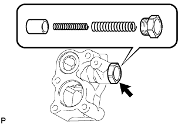
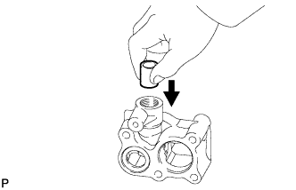
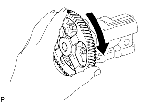

OIL PUMP > INSPECTION |
| 1. INSPECT OIL REGULATOR ASSEMBLY |
 |
Remove the oil pump relief valve plug.
Remove the 2 valve springs and relief valve.
 |
Check that the valve falls smoothly into the valve hole by its own weight.
If it does not, replace the relief valve. If necessary, replace the oil regulator assembly.
Coat the relief valve with engine oil.
Install the relief valve and 2 relief valve springs into the oil regulator body hole.
Install the oil pump relief valve plug.
| 2. INSPECT OIL PUMP ASSEMBLY |
 |
Turn the gear and check that the oil pump bearing moves smoothly and quietly.
If necessary, replace the oil pump assembly.